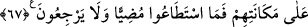

O GÜN ONLARIN
AĞIZLARINI MÜHÜRLERİZ
59. “Ayrılın bir tarafa bugün, ey günahkârlar!”
60. “Ey Âdem oğulları! Size şeytana tapmayın, çünkü o sizin apaçık bir
düşmanınızdır” demedim mi?
61. “Ve bana kulluk edin, doğru yol budur” demedim mi?
62. Şeytan sizden pek çok milleti kandırıp saptırdı. Hâla akıl erdiremiyor
musunuz?
63. İşte, bu size vâdedilen cehennemdir.
64. İnkârınız sebebiyle bugün oraya girin!
65. O gün onların ağızlarını mühürleriz; yaptıklarını bize elleri anlatır, ayakları
da şâhidlik eder.
66. Dilesek onların gözlerini büsbütün kör ederdik. O zaman doğru yolu bulmaya
koşuşurlardı, ama nasıl göreceklerdi?
67. Eğer dilesek oldukları yerde onların şekillerini değiştirirdik de ne ileriye
gitmeye güçleri yeterdi ne de geri gelmeye!
“Ayrılın bir tarafa”
“ bir şeyi ayırdı ve öteye attı, o da ayrıldı demektir. “ birbirine
benzeyen/karışık şeyleri birbirinden ayırmaktır. Bu ayrılma emri, insanlar haşrolunduğu
zaman mü’min ve kâfirin, samîmî/muhlis ile münafığın karışık olacağına delâlet eder.
Sonra iki grup birbirinden ayrılacaktır. Nitekim Allah Teâlâ: “Kıyamet kopacağı gün,
işte o gün (mü’minlerle inkârcılar) birbirlerinden ayrılacaklardır.” (er-Rûm, 30/14)
buyurur.